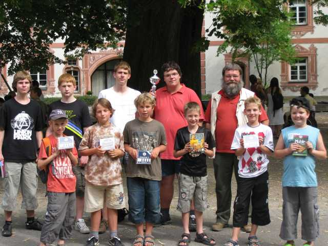
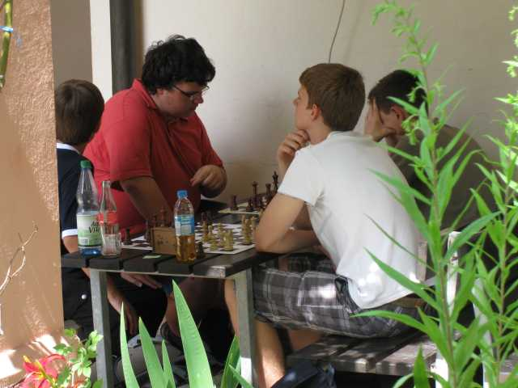
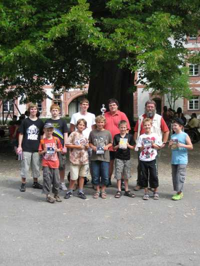

Hier das Abschlussbild mit dem Pokal und den Preisen.

Eine wunderschöne Atmosphäre herrschte im Hof des Malteserschlosses.

Für unsere "Anfänger" (rechts Valentin, 2.v.r. Jan) war es das allererste
Schachturnier.

Konzentration, Durchhaltevermögen und Spass am Spielen
zeichneten alle aus.
Hier Julian (hinten links)

Auch unsere Fortgeschrittenen, hier Nicolas (links) und Lukas, hatten
Spass.

Jochen, der spätere Sieger der U16, und Rafael, der "nur" zweitlpatzierte in
der U18,
bei der Arbeit.

Selten nur mussten die Schiedsrichter zu Hilfe gerufen werden..

Am Ende waren alle erschöpft aber zufrieden.